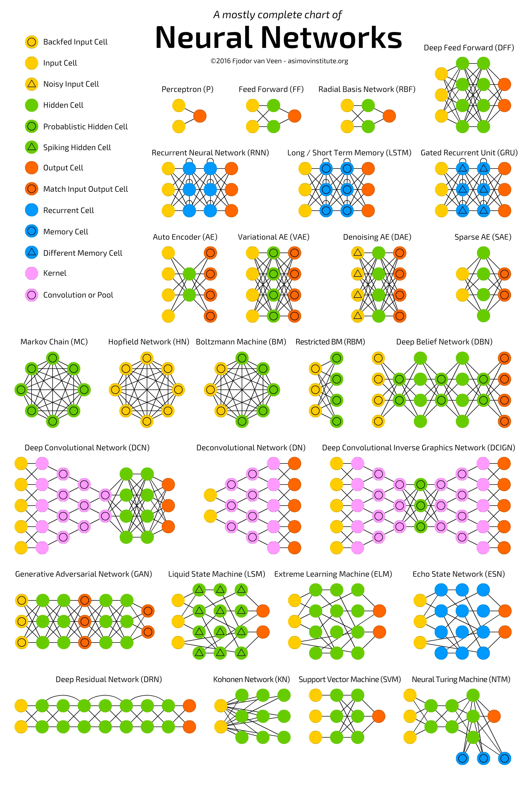

Machine Learning
By Siri Munigunti
Machine Learning and Deep Learning: A Review of Methods and Applications
Machine learning is becoming increasingly relevant in our society, with applications in industries like healthcare, finance, retail, transportation, and more. Significant research has been conducted in areas like computer vision, where algorithms known as convolutional neural networks help with object recognition and classification. Potential applications for this technology include medical imaging analysis, autonomous driving, quality control in manufacturing, and more. However, there still remain some concerns about data privacy/transparency and bias. As machine learning continues to grow, it is crucial that an ethical framework is established to ensure this technology is used responsibly. For instance, Generative Adversarial Networks (GAN) are widely used for image and video generation. A generator network creates data samples, and the discriminator network decides whether the data is real or fake. While GANs have much potential for advancing technology, they also raise concerns about misuse, such as creating deep fakes. Additionally, lack of transparency into how machine learning models’ decision-making processes has led to increased need for research into explainable AI (XAI). Some broader societal concerns around machine learning include its effects on the job market. While automation can improve efficiency, it could also lead to job losses. For this reason, there have been calls for policies regulating its use. Overall, machine learning has much potential to revolutionize various industries, but addressing challenges about privacy and ethical use will be essential to its future (Sharifi & Amini).
Platform
Python
Python is one of the most widely used coding languages in machine learning. It is ideal for machine learning because of its simplicity, which makes it a popular choice for beginners and experts alike. Python contains many libraries, which are like collections of prewritten code that can help a user program more efficiently. For machine learning, libraries can help with data manipulation and reduce the amount of code to be written. Python’s growing community of users ensures that libraries stay up-to-date. Some examples include: SciKit-learn, TensorFlow, and NumPy.
- SciKit-learn: SciKit-learn is one of the most popular Python libraries for machine learning. It simplifies building and testing of machine learning models.
- TensorFlow: TensorFlow was developed by Google and is primarily used for deep learning applications. It helps with training deep neural networks.
- NumPy, SciPy, Pandas: NumPy is used for scientific and technical computing. SciPy and Pandas both build on NumPy. NumPy is good for analyzing tables of data, SciPy helps with optimization and statistical analysis, and Pandas help with data cleanup and manipulation.
Social/Cultural Engagement
Kaggle Online Community
Kaggle is an online community for machine learning with over 20 million users from 190 countries. This community includes beginners to machine learning, researchers, and ML model developers. The site provides up-to-date information on advancements and new technologies in machine learning and offers tools for individuals of all experience levels to engage with the field. Kaggle also features hundreds of thousands of public datasets for training ML models, as well as 1.2 million public notebooks, which simplify coding by providing a pre-configured environment with pre-installed softwares and libraries. There are pre-trained machine learning models and free courses on topics like Python, Intro to Machine Learning, and Data Visualization to help users of all levels expand their knowledge, and forums for people to discuss their ideas, ask questions, and collaborate. One of the most valuable parts of being in the Kaggle community is the machine learning competitions. Kaggle has competitions, some hosted by major companies like Google, which provide opportunities for prizes and skill development (Kaggle. Machine Learning).
(Kaggle. What's Kaggle?)
Social/Cultural Engagement
Machine Learning Conferences
Machine learning conferences are great places for sharing research and bringing together people of a wide range of backgrounds. There are three major conferences that happen each year:
- Conference on Neural Information Processing Systems (NeurIPS): This is an interdisciplinary conference that includes machine learning talks, demonstrations, and presentations of research papers. It also has a professional exposition to display machine learning in practice with tutorials and workshops (NeurIPS).
- International Conference on Machine Learning (ICML): This conference was founded in 1980, and it publishes research on machine learning and its applications machine vision, computational biology, speech recognition, and robotics. ICML also explores machine learning's relation to artificial intelligence, statistics, and data science. It's attended by researchers, entrepreneurs, engineers, and more. The next conference will be held in the Vancouver Convention Center from July 13th-19th, 2025 (ICML).
- International Conference on Learning Representations (ICLR): ICLR is specifically geared towards the advancement of deep learning. It also publishes research and explores connections between deep learning and fields like artificial intelligence and data science. Other topics explored include optimization of deep learning, theoretical issues, applications in audio, speech, robotics, neuroscience, biology, and gaming. The next conference will be held April 24-28th, 2025 in the Vancouver Convention Center (ICLR).
Glossary Term
Deep Learning
Deep learning is a subset of machine learning. It involves the use of artificial neural networks to process and
analyze data. These artificial
neural networks mimic how the human brain works. There is an input layer, output layer, and hidden layer. When
the neural network has three or
more layers, it’s labeled “deep,” hence the name. The input layer includes neurons that receive input data, the
hidden layers recognize patterns
in the data, and the output layer gives the output of the network
Types of neural networks:
- Feedforward neural networks (FF): Feedforward neural networks are one of the oldest forms of artificial neural networks. Data flows from the input layer to one or more hidden layers and then out the output layer. Data only flows in one direction.
- Recurrent neural networks (RNN): RNN work in cycles where the output of the previous step is used as input instead of assuming that inputs and outputs are independent of each other.
- Long/short term memory (LSTM): LSTM builds upon RNN by remembering information over the long term. It recognizes patterns over time by remembering important details and ignoring irrelevant ones
- Convolutional neural networks (CNN): CNN are primarily used for image, speech, and audio signal inputs. It looks for patterns and breaks down details within its layers so that input can be classified
- Generative adversarial networks (GAN): GAN use a generator that generates fake data that a discriminator must recognize from real data. They help with improving the accuracy of a model.

(Tch)
Glossary Term
Machine Learning Models
Machine learning is a way of developing systems that can learn from inputted data without them being explicitly programmed. Machine learning models work by recognizing patterns in datasets and making predictions. There are three main types of machine learning models used: supervised, unsupervised, and reinforcement.
- Supervised learning: Supervised learning involves the use of labeled data. The model knows what it is being trained to recognize, and it is fed data of that specific output. For instance, if a model is being trained to recognize and image of an orange, it is only fed pictures of an orange that have been labeled as such.
- Unsupervised learning: As opposed to supervised learning, unsupervised learning uses unlabeled data. The model is given data, but does not know what the output should be. Instead, it categorizes the incoming data by similar attributes (such as separating apples from oranges) to figure out which group they should fall under. This type of model is particularly good for pattern recognition and descriptive modeling
- Semi-supervised learning: Semi-supervised learning falls in between supervised and unsupervised learning. Some of the input data is labeled and some is not.
- Reinforcement learning: Reinforcement learning is a “learning-by-doing” model where the model receives positive reinforcement when it performs well and negative reinforcement if it does not. An example is an algorithm learning to play a game, where positive reinforcement would be a series of moves that leads to the algorithm winning the game.
(Simplilearn)
Works Cited
“Deep Learning vs Machine Learning.” Google Cloud, https://cloud.google.com/discover/deep-learning-vs-machine-learning. Accessed 12 Nov. 2024.
ICLR 2025 Conference https://iclr.cc/". Accessed 14 Nov. 2024.
ICML 2025 Conference https://icml.cc/. Accessed 14 Nov. 2024.
Kaggle. “What’s Kaggle?” Youtube, 13 June 2019, https://www.youtube.com/watch?v=TNzDMOg_zsw&t=54s".
Kaggle: Your Machine Learning and Data Science Community. https://www.kaggle.com/". Accessed 12 Nov. 2024.
NeurIPS 2024 Conference. https://neurips.cc/. Accessed 14 Nov. 2024.
Raschka, Sebastian, et al. “Machine Learning in Python: Main Developments and Technology Trends in Data Science, Machine Learning, and Artificial Intelligence.” Information, vol. 11, no. 4, 2020, pp. 193. MDPI, https://doi.org/10.3390/info11040193
Sharifi, Ali, and Amini, Farhad. “Machine Learning and Deep Learning Methods: A Comprehensive Review.” Journal of Machine Learning Research, vol. 20, no. 1, 2023, pp. 45-67. https://papers.ssrn.com/sol3/papers.cfm?abstract_id=4458723
Simplilearn. “Machine Learning | What Is Machine Learning? | Introduction To Machine Learning | 2024 | Simplilearn.” Youtube, 19 Sep. 2018, https://www.youtube.com/watch?v=ukzFI9rgwfU".
Tch, Andrew. “The Mostly Complete Chart of Neural Networks, Explained." Medium, 4 Aug. 2017, https://towardsdatascience.com/the-mostly-complete-chart-of-neural-networks-explained-3fb6f2367464".